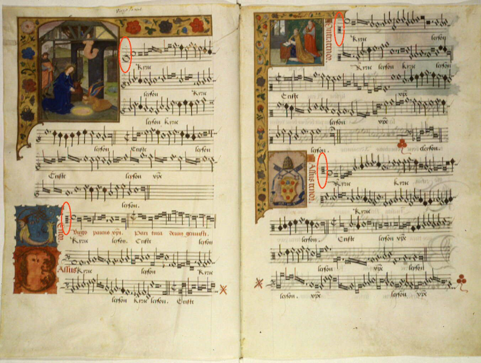
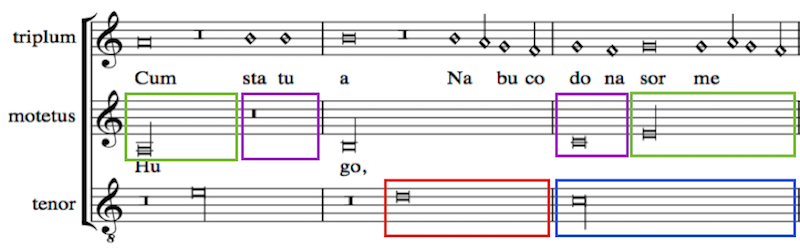
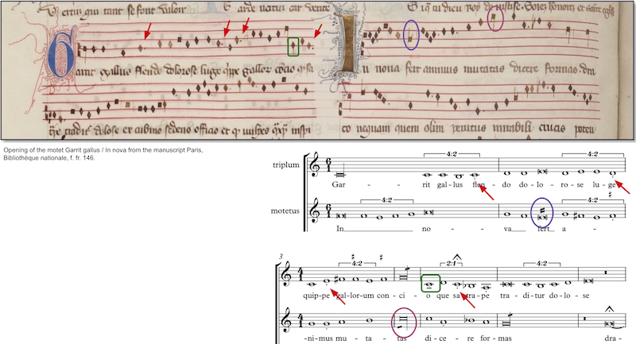
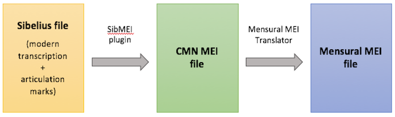
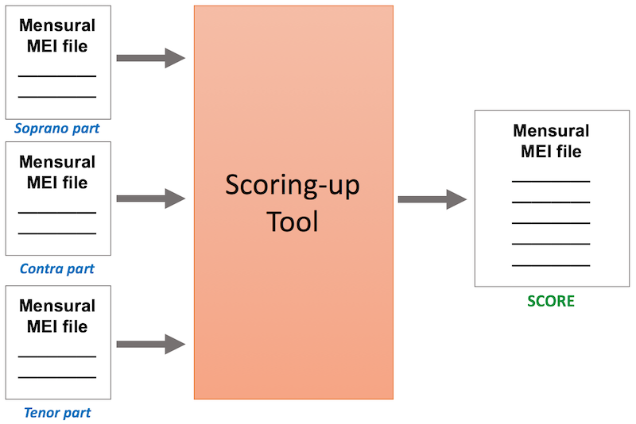

Digital Encoding of Mensural Music: an Interview with Martha Thomae
Posted by ehopkins on January 19, 2018
Martha Thomae is a PhD student in the Music Tech Department, working on mensural notation for the SIMSSA Project. Originally from Guatemala, she came to Montreal for her Master’s in Music Technology in 2015 and she started her PhD here this past fall. She’s pictured below at the beach in Calahonda, Motril, in the Granada province of Spain. Music Theory PhD student Sam Howes (read our interview with him in 2016 here) interviewed her about her work on her Master’s thesis and some more current projects.

Sam Howes: Most musicians today have never seen mensural music. Could you give us a little introduction to this method of music notation?
Martha Thomae: Sure, mensural music refers to music written in mensural notation, a system that was used between the 1250s and the 1600s for vocal polyphonic music. Mensural notation is the immediate predecessor of our common Western music notation (CWMN) system. You can see already similarities between the two (Figure 1, below). Mensural notation already uses staff lines and clefs to denote pitch, and there are various note shapes used for the different note values. Actually, mensural notation was the system that introduced the idea of using different note shapes to represent distinct values into the Western music tradition.

Figure 1: Example of a mensural piece. Kyrie by J. Barbireau, early sixteenth century. As most mensural music, it is written in separate parts (i.e., the voices are written in different areas of the page). The red circles show the clefs for the first line of each of the four voices of this piece. (Image obtained from Wikipedia)
But there is one important difference between the two systems and that is that note values in mensural notation are not absolute but rather context-dependent. The same note can have two values: perfect (ternary value, similar to that of a dotted note) and imperfect (duple value, similar to an undotted note). While all notes have a default value given by what is called the “mensuration” (the older idea of meter), the value can be modified by the context (this is, the notes preceding or following the note). The main two context-related modifications are imperfection (when a perfect note is changed to imperfect) and alteration (when a note is twice as long). Principles regarding the contexts in which these modifications take place have been outlined in Franco’s Ars Cantus Mensurabilis (ca. 1280), these are known as principles of imperfection and alteration. Figure 2 (below) shows an example of such modifications.

Figure 2: In this excerpt the long (blue box) is perfect by default, which means it is equivalent to three breves (purple box). The barlines were added to divide the notes into groups equivalent to three breves. The blue and purple boxes show the default values of the long and the breve, respectively. On the other hand, the green and red boxes show their contextually modified durations. The long in the green box is an example of imperfection (i.e., the perfect long losses one third of its value and becomes imperfect) and the breve in the red box is an example of alteration (i.e., the note’s value gets doubled).
SH: Please tell us about the music you are working with. Where and when are these manuscripts from?
MT: I have been working with Prof. Karen Desmond on the digital encoding of French motets from the 1300s to the 1350s. This time span corresponds to a period of stylistic change, between the ars antiqua (old art) and the ars nova (new art) styles of mensural notation. Thus, the repertoire we are working with has features of both the old and the new art. We are working with motets from four manuscript sources: the Montpellier Codex, the Roman de Fauvel manuscript, the Brussels rotulus, and the Ivrea Codex. Recently I expanded this set of encoded pieces to include a few fifteenth-century chansons by Du Fay and Ockeghem.
SH: How did you become interested in mensural notation and when did you start working with it?
MT: I became interested in mensural notation during the last year of my undergrad. I was studying a BSc in Mathematics and I wanted my Undergraduate thesis to be multidisciplinary, specifically I wanted it to be applicable to music. One of my professors talked to me about mensural notation and about how its context-dependent nature makes it hard to transcribe it into modern values. I wanted to develop an algorithm that modeled the transcription process of mensural notation into modern values, so I took Willi Apel’s The Notation of Polyphonic Music 900–1600 and began studying this notational system.
SH: Why is it important to have digital representations of mensural music? How will these benefit music researchers?
MT: The encoding of music in machine-readable files provides a way to preserve and share the music, but, most importantly, it allows for computational music-analysis. We can develop scripts, using music-analysis libraries such as music21, to search for various features to analyze a piece (e.g., the types of sonorities on every downbeat). Actually, the motets from the 1300–1350 transition period were used in Karen Desmond’s Measuring Polyphony Project to study the change in the deployment of sonority over this period. With encoded music, we can answer similar questions and perform large corpus studies, we can actually prove (or disprove) our hypothesis regarding a piece or set of pieces from a particular composer, style, or period.
SH: What are some of the challenges in the encoding process? How are you dealing with these?
MT: First, there are very few formats that provide support for encoding mensural notation. The one I have been working with for the past two years is MEI (Music Encoding Initiative), which supports mensural notation through its Mensural MEI module. MEI is a flexible format for encoding a wide variety of music (including mensural), but the Mensural module is still a work in progress. This presented a difficulty when dealing with mensural features whose encoding has not yet been standardized.
But the most significant issue for encoding mensural music is capturing the rhythmic information. In CWMN the relative duration of a note is explicitly stated by the notation; we only need to encode the shape of the note and the fact that it is dotted or not (or that it is part of a tuplet) to account for the durational information. This is not the case in mensural notation: the note shape, although necessary, is not sufficient to determine the duration of a mensural note because it depends on the context.
I have worked in two projects that deal with this context-dependency issue in distinct ways:
First, Karen Desmond’s Measuring Polyphony Project. In this project, we deal with the context-dependent nature of note duration by extracting the duration information of the notes of a mensural piece from a modern transcription of the piece (this is, a transcription of the piece into modern values). We are taking modern transcriptions of the repertoire and translate them back into mensural notation. The modern transcriptions are entered into Sibelius and articulation marks are added to account for mensural notation specificities that are not generally included in modern transcriptions (Figure 3, below).

Figure 3: Example of an edited modern transcription (bottom) of a mensural piece (top). The articulation marks of the modern transcription are a way to account for mensural notation specificities that do not exist in CWMN, such as plicas (purple and pink circles), dots of division (red arrows), downward stems (green box) and alterations.
Through a series of processes, these edited-Sibelius files are transformed into symbolic files that encode the piece in the original mensural notation (Figure 4, below).

Figure 4: Three-step methodology to obtain the Mensural MEI file that encodes the mensural piece in the original notation and with the right contextual duration of all of its notes. First step, entering a modern transcription into Sibelius (which can be done by importing a midi or MusicXML file) and adding articulation marks to account for mensural notation specificities. Second step, use of the SibMEI plugin to obtain CMN MEI file that encodes the edited modern transcription in common music notation. Third step, use the Mensural MEI Translator to translate the encoding of the modern transcription into the encoding of the original mensural piece, which is stored in a Mensural MEI file.
Second, the scoring-up tool I developed for my MA thesis. In this project, the program itself figures out the duration of the notes by using the principles of imperfection and alteration summarized in Franco’s Ars Cantus Mensurabilis. The result of the program is a file that contains all the information for the mensural piece to be rendered in the original notation but in score format (rather than the usual separate-parts layout of the original piece).

Figure 5: The scoring-up tool takes a set of Mensural MEI files that encode each of the voices of the piece, including only pitch and note shape information. These input files could be obtained by performing Optical Music Recognition (i.e., computer recognition of music glyphs) on the original sources. The output consists of a single file that encodes all the information of the input files plus the duration of all notes, representing the piece as a mensural score.
SH: In terms of developing your own software, what is your main goal? How will your software interact with other applications that already exist?
MT: My main goal is to develop a tool that facilitates the encoding of mensural pieces so that they are faithful to the original sources (they are written in the original notation) but that also include information regarding the notes’ contextual duration. The two projects I have been working on relate to this goal.
The software I developed for the Measuring Polyphony Project, called the Mensural MEI Translator, is used in conjunction with other MEI applications:
- SibMEI a plugin that converts a Sibelius file into a MEI file in CWMN values
- LibMEI, a library for interacting with MEI files
- Verovio, a render engine for MEI files which allows for displaying the resulting mensural piece on a web-browser
The scoring-up tool is also built upon LibMEI, and the resulting mensural score is visible when this file is rendered in Verovio.
Thank you!